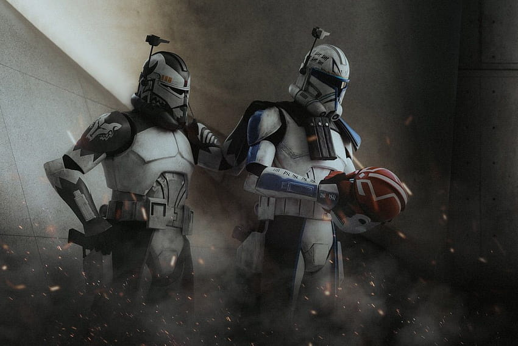

Le 104e Bataillon, également connu sous le nom de Bataillon Wolfpack était un bataillon de la Grande Armée de la République créé après la bataille de Geonosis, en 22 av.BY. Le commandant de ce bataillon était le Général Jedi Plo Koon. L'escouade Wolfpack, commandée par Wolffe faisait partie du 104e.
Le 104e Bataillon participa notamment à la bataille d'Abregado, à la première bataille de Felucia, au sauvetage de Mace Windu et d'Anakin Skywalker sur Vanqor, à la bataille de Lola Sayu, à la deuxième bataille de Felucia et à la mission humanitaire sur Aleen.

Plo Koon était un Kel Dor membre du Haut Conseil Jedi durant les dernières années de la République Galactique. Il combattit durant la Guerre des Clones puis mourut dans le crash de son vaisseau durant l'Ordre 66 sur Cato Neimoidia. Il était aussi le Général du 104e Bataillon
Wolffe, de matricule CC-3636, était un commandant clone servant dans la Grande Armée de la République durant la Guerre des Clones sous les ordres du Maître Jedi Plo Koon. Il dirigeait le 104e Bataillon, dont l'escouade Wolfpack.
Peu avant la fin de la Guerre, Rex, Wolffe et Gregor réussirent à enlever la puce présente dans leur tête servant à enclencher l'Ordre 66. Ils ne trahirent donc pas les Jedi et devinrent des rebelles combattant l'Empire Galactique grâce à leur RT-TT modifié.
Ils rencontrèrent les rebelles de Lothal sur Seelos, envoyés par Ahsoka Tano, qui les amenèrent à combattre brièvement pour la rébellion.
Comet est le surnom d'un caporal clone ayant servi dans la Grande Armée de la République durant la Guerre des Clones. Il faisait partie de l'escouade Wolfpack et du 104e Bataillon. Il a participé notamment au sauvetage de Mace Windu et Anakin Skywalker sur Vanqor.
Sinker était un sergent clone du Wolfpack durant la Guerre des Clones. Il fut déployé dans le système Abregado au côté du Maître Jedi Plo Koon, à la recherche d'une nouvelle arme de la Confédération des Systèmes Indépendants.
Né sur Kamino, Warthog fut entraîné dans les infrastructures de Tipoca City avec plusieurs milliers de ses frères. Il fit partie des clones formés pour le pilotage des chasseurs et vaisseaux légers de la flotte de la Grande Armée de la République. Il fut ensuite incorporé au Wolfpack au début de la Guerre des Clones.
Boost était un soldat clone faisant partie du bataillon Wolfpack durant la Guerre des Clones.
Il fut déployé dans le système Abregado avec le Maître Jedi Plo Koon, à la recherche d'une nouvelle arme de la Confédération des Systèmes Indépendants. Il s'avéra que cette nouvelle arme était le Malveillant, un croiseur lourd de classe Subjugator armé de deux canons à ions. Les Séparatistes utilisèrent leur arme sur la flotte de la République Galactique et Boost parvint à embarquer dans une capsule de sauvetage aux côtés de Plo Koon, du Commandant clone Wolffe et du sergent clone Sinker.
Ils assistèrent ainsi à la destruction du Destroyer Stellaire de classe Venator, le Triomphant. Les passagers de la capsule découvrirent que les Séparatistes avaient déployé des droïdes de combat rocket afin d'éliminer tous les survivants. Le soldat et ses compagnons parvinrent à détruire les droïdes. Ils furent finalement secourus par Anakin Skywalker et sa Padawan Ahsoka Tano.